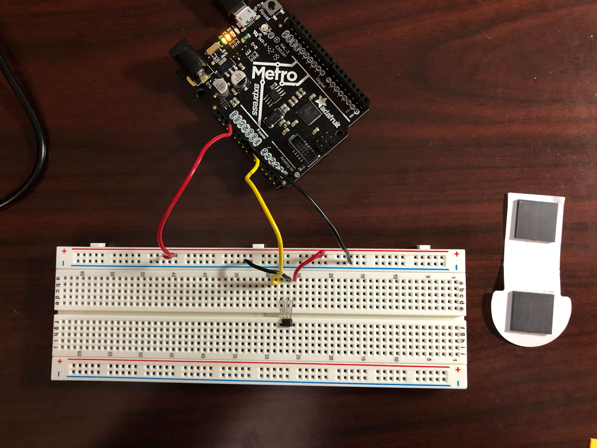
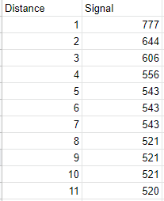
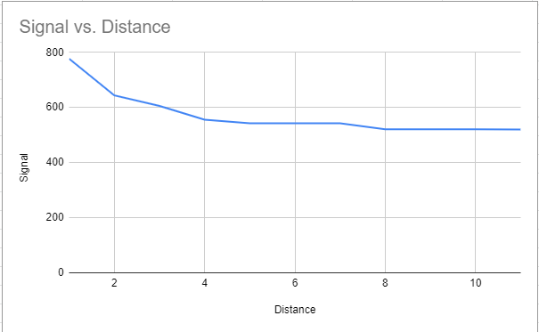
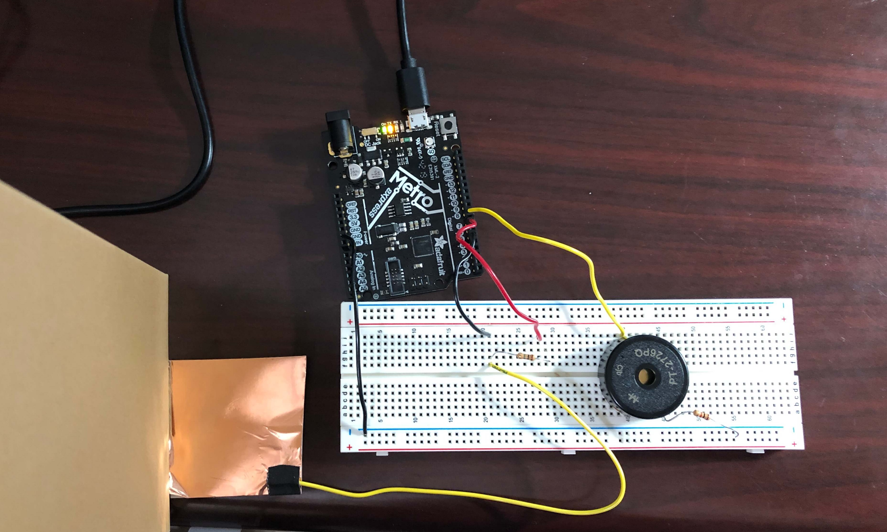
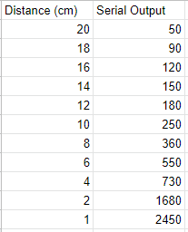
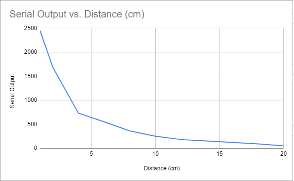

For the first part of today's assignment, I initially had a bit of trouble. First, I tried to use a piezoelectric disc to create a varying voltage in response to force, but for the purposes of this assignment, I realized that I did not have a reliable method of varying force to calibrate the sensor. The next sensor I tried was the phototransistor, but I had trouble building the circuit, and when using my voltmeter to measure the voltage after the resistor and before the phototransistor, I couldn't manage to get any voltage other than zero. Others have expressed having trouble with the phototransistor as well, so I decided to try yet another sensor. I used Rob's tutorial to use the Hall sensor as a distance sensor and see if my calibration would be similar to what Rob measured. Here is my circuit:

I used the AnalogReadSerial example from Arduino to read the input on analog pin 0. Here is the code:
void setup() {
// initialize serial communication at 9600 bits per second:
Serial.begin(9600);
}
// the loop routine runs over and over again forever:
void loop() {
// read the input on analog pin 0:
int sensorValue = analogRead(A0);
// print out the value you read:
Serial.println(sensorValue);
delay(1); // delay in between reads for stability
}
Unlike Rob, I used stacks of post-it notes that were 1 mm thick as my spacers instead of cardboard. The magnet that I used was from a magnetic bookmark, so it probably was not as strong as the one that Rob used. With no magnet, the signal was about 518. With the magnet directly on top of the sensor, the signal was 872. Here is a table of the signal varying based on the magnet's distance from the Hall sensor.

I don't know exactly why my signal counts decreased with distance instead of increasing like Rob's did, although my data suggests that the useful range of the sensor with my bookmark magnet is 1-4 mm. Here is a graph of the data:

For the second part of today's assignment, I used copper tape to make a touch sensor that would translate into tones played by a buzzer. I was inspired by theremins, although my final product was not nearly as advanced as real theremins. Turn on sound to hear the theremin circuit in action!
To build the circuit, I used capacitance to control the tone of a buzzer. By connecting the capacitive sensor made of copper tape to pins 5 and 7 connected by a 1M ohm resistor, the copper tape was able to sense the electrical capacitance of my hand. Then, I connected a buzzer to pin 8 and used a 1K resistor to connect it to ground. Here's a picture of the circuit!

The value from the capacitive sensor was printed to the Serial monitor, and I used the map function to map the range of the values picked up by the sensor to a range of tones that I wanted the buzzer to produce. In order to not have as much noise when I was not hovering my hand above the copper tape, I made the range of Serial values start from 100 to 4000, which would corespond to pitch values from 100 to 2000 Hz. Here's the code:
#include
int buzzerPin = 8;
CapacitiveSensor Sensor = CapacitiveSensor(7, 5); //7 is charge pin. 5 is sense pin.
void setup() {
Sensor.set_CS_AutocaL_Millis(0xFFFFFFFF); // turn off autocalibrate on channel 1
Serial.begin(9600);
}
void loop() {
long sensorValue = Sensor.capacitiveSensor(1000); //Change the number of samples to get the required timing and sensitivity.
delay(10);
Serial.println(sensorValue);
int note = map(sensorValue, 100, 4000, 100, 2000); //map range of sensor values to range of tones
tone(buzzerPin, note, 20); //play tones according to value from map function
noTone;
delay(10);
}
I calibrated the sensor based on my hand's distance from the copper tape. I measured my hand's distance from the sensor with a ruler taped to a vertical cardboard box, so it's possible that the data is not entirely reliable due to the possibility of my hand moving while I was looking at the Serial plotter to determine the average Serial monitor output for a given distance.
I graphed the Serial monitor output vs distance in cm. The sensor is really sensitive to values below 2 cm, as shown by the steep downward slope, and the relation between distance and serial output was not linear. Without my hand near the circuit, the sensor gave off a value around 50-150. With my hand directly on top of the copper tape, the sensor gave off a value all the way up to at least 20,000.

